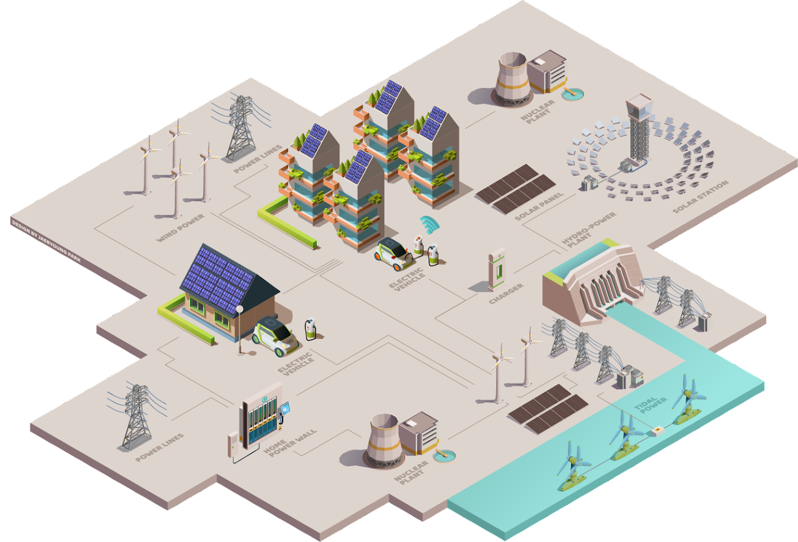

We are all aware that the modern civilization on the earth is getting more reliant on electrical infrastructures for our daily lives, and the recent pandemic outbreak and global climate change have highlighted their importance more than ever. In other words, the demand for electricity is increasing and it should preferably be fulfilled by sustainable power generation. For that purpose, modern power systems are transformed to be smarter by incorporating renewable power technologies and advanced control schemes, to operate such ever more complicated systems.
As a quintessential example of networked systems, power grids compose one of the world’s biggest engineering systems not only for their sizes but also in terms of relevant disciplines involved to develop and operate them. For instance, on the structural side, the topology of transmission grids corresponds to substrate network structures that enable us to utilize our rich toolkit developed in network science to investigate their properties in various scales. On the dynamical side, an AC power grid is essentially a nonlinear dynamical system whose interaction between power components is analyzed by relevant equations such as the second-order Kuramoto type model called the swing equation. Its stable synchronization is a necessary condition of quality power grids, and the aforementioned statistical physics approaches disclose the fundamental mechanism of the power-grid dynamics. In addition, power grids are essentially living systems as they constantly fluctuate according to the change of operational environment, and in particular, they are obviously more susceptible to renewable energy sources. Along with the autonomous primary control, the secondary controlling operation helps to relax the system promptly for which control theory provides clues.
By organizing this satellite meeting, we set up the stage by gathering researchers from various disciplines to tackle the challenges of power systems ahead of us. The disciplines encompass network analysis, nonlinear dynamics, control theory, power system analysis, sustainability assessment, and other relevant subjects. We intend to narrow the gap between different approaches, expecting to promote collaboration between researchers with their own sparkling ideas and hopefully yield innovative solutions that possibly contribute to help the sound transition towards the sustainable power system.
Network science meets energy systems
Online Meeting
This satellite meeting will be held online through the Zoom platform via
to be anounced
Organizer

Heetae Kim
Korea Institue of Energy Technology
Seung-Woo Son
Hanyang University
Sang Hoon Lee
Gyeongsang National University
Mi Jin Lee
Hanyang University
Eun Lee
Pukyong National University
- © Untitled.
- Design: HTML5 UP